A series of pen-and-ink lithographs, developed and printed in a traditional workshop in Tidaholm, Sweden. Each motif was hand-drawn on stone and printed using the flat printing technique lithography – blending detailed illustration with a nice texture and depth you can only achieve with analog techniques
Reviving an old printing technique – Swedish style
Rumbling heavy stones around. Grinding and rasping them for hours with sands and stone work tools. Rinsing them with water every few minutes and drying them with manual fans. Repeating that same process for hours. Applying thick oily pastes and gum to the stone. Speckling them with chemicals, acid and lamp oil repeatedly.
Sounds like hard work? It is! But why do all of this anyway? We are doing it to learn a printing technique that has been an industry-wide standard for centuries - the technique of lithography.
Lithography (roughly translates to "stone printing") is a flat printing technique. This means that you print an image with a flat surface. In this case, with a flat stone. It’s a chemical printing process: the basic principle behind it is that oil repels water. Most likely, you once tried mixing both - doesn't work so well. In Lithography, only certain areas of the stone that were specifically prepared take up the oily ink. Metaphorically spoken, the stone has a "memory" of where the ink touched it.
In the following, I’ll take you with me on the process of printing a lithography from sketch to finished print.
Some like it more to paint into the blue – being a bit more of a planner, I took a bit of time to work out a concept for my series.
The series focuses around the interconnection of humans and nature. We are part of nature, part of the natural cycles and the ecosystem, no matter how far we try to separate us from it. All different kinds of organisms live in strong interconnection and interdependence – plants, animals, fungi, even the smallest microbes, they all play an important role in our ecosystem. In each of the three motifs of the series, I pick out one group of organisms and set it in relation with human hands to underline our dependency with nature.
Step 02 – Preparing the stones
Creating a lithography from scratch takes a lot of time and physical effort. The first step, before you can transfer a motif onto a stone, is to plan the size of the print and to find matching stones. The stones for lithography come in different forms and sizes, from postcard-size to huge plates that one person can not carry alone.
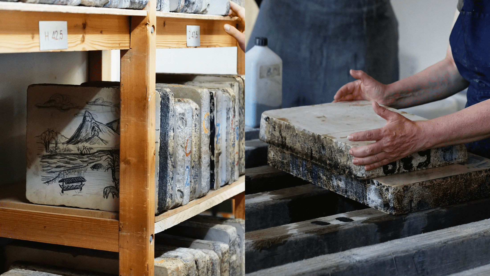
Choosing stones for printing (left) and grinding them (right). The motif on the stone will be erased forever (artist of the previous motif unknown)
When having found two matching stones, the physical work starts. You carry the stones to a workbench and start to grind off the layers of the previous motif by moving one stone over another in a circular motion. A stone will usually be used for printing as long as possible, until it is literally gone. With each new motif, a small layer of the stone gets erased.
This is one reasons lithographs are so precious – a motif can only be printed for a certain period of time. When the printing process ends, the stone finds it way back into the shelf and the motif gets erased to make room for a new one. It can then never be reprinted again – lithographs are usually a very limited edition.
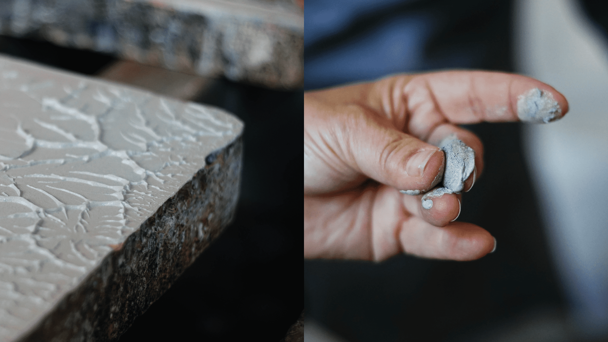
Grinding Sand and water combine with fragments of the stone to a cement-like paste
While grinding, the mixture of sand, water and more and more stone fragments will combine into a thick paste-like substance. The more and more stone fragments come off the stone, the thicker the substance gets and the harder it will be to move the stone. For that reason, you will wash off the paste with water and apply new grinding sand several times.
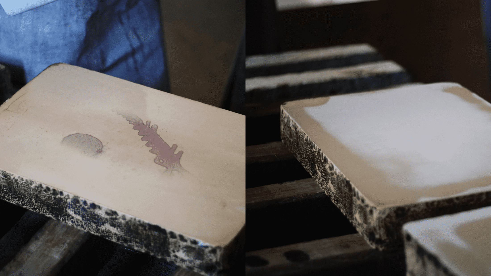
A half-erased motif on the stone (left) and the final, clean stone (right)
In the process, you have to check on the stone several times to see how you are proceeding. In the example above, you can see a partly grinded stone. The motif is erased near the borders, but still visible in the middle. After some more effort, in the end, you get a smooth stone with a clean surface that is ready to be drawn on.
Step 03 – Bringing the motif to the stone
Everything smooth and clean? Excellent. Now it’s time to get the art on the stone.
The most crucial part of the long process is, of course, bringing your motif onto the stone without messing it up. I started with drawing small thumbnail sketches until the composition felt just right for me. Then I worked out the detailed sketch, matching to the actual size and proportion of the stone.
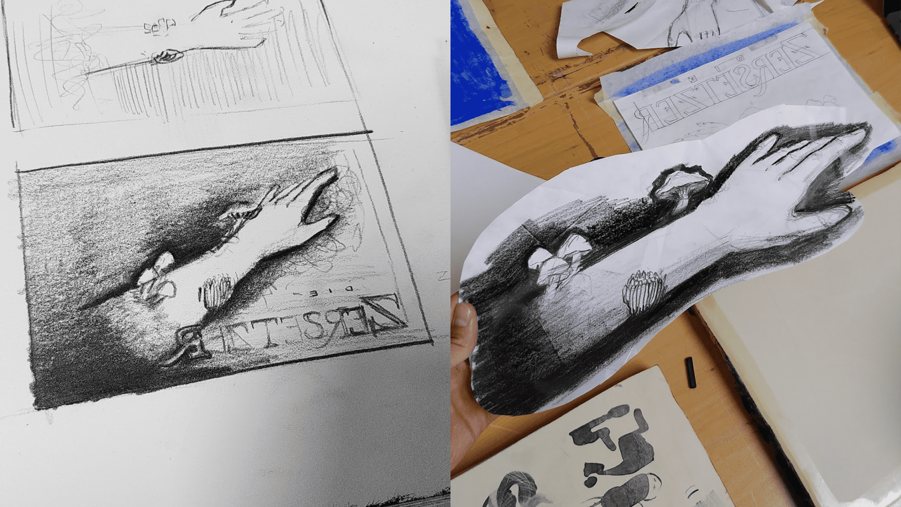
From first thumbnail sketches (left) to the final sketch for transferring (right)
As you can see above, the thumbnail sketch is already close to the final version. This doesn’t have to be the case, and things can still be changed and explored in the process. For example, I first planned the letters to be in the bottom corner and changed the position again afterwards.
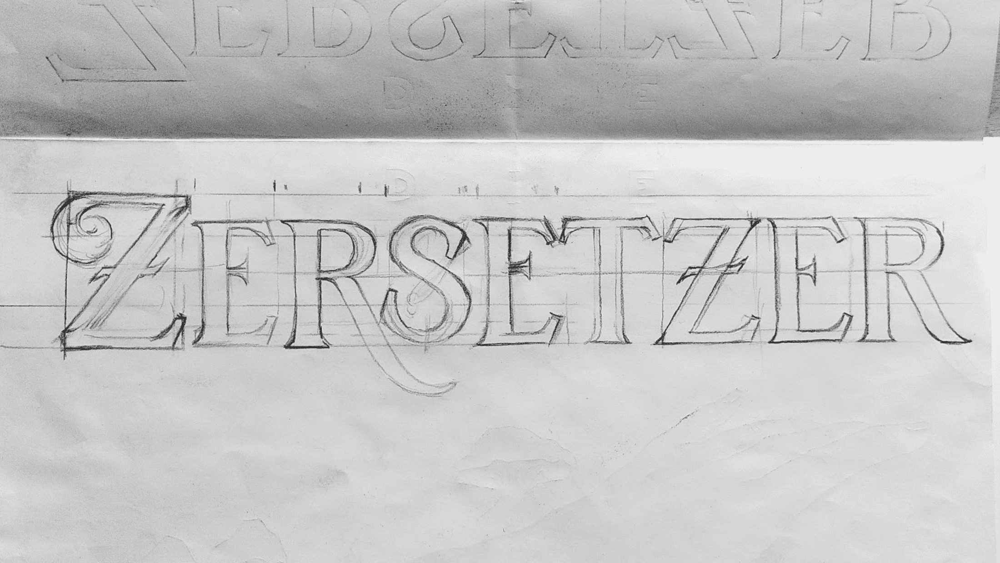
Working out the typography – every letter is drawn by hand
In the series, the letters are equally important as drawing the rest of the motif. Each letter is individually drawn. Here, you can see the final sketch of the letters that is transferred onto the stone.
Now to the tricky part – we directly print on the paper with our stone. Therefore, the whole motif has to be mirrored, assuming we don’t want to read the wrong way around. A trick to make this easier is a light table. With its help, we can rearrange the whole composition and turn the letters around.
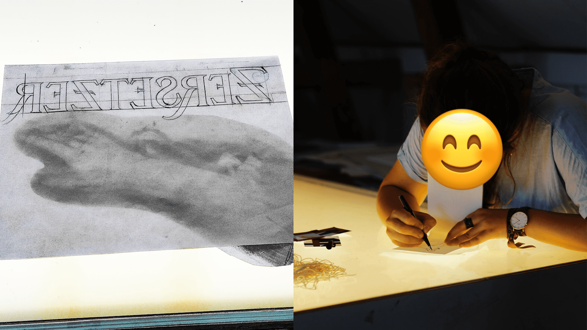
Mirroring the whole motif with the help of a lighting table
Above, you can see how I arranged my composition and mirrored it. Each individual piece of the motif can be cut out and moved around. Then, I traced the final (mirrored) composition onto a fresh piece of paper. In the next step, I transfer this master sketch using a special foil with pigments on it.
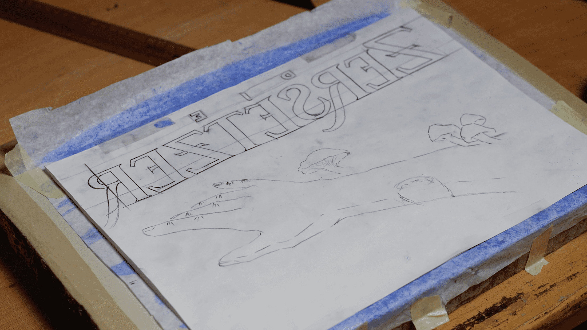
The mirrored sketch is transferred onto the stone with a special pigment foil
The principle is easy: you retrace every line of the sketch, and the pigment gets transferred onto the stone. If you ever got a tattoo, the process will feel familiar to you. This will help us to get very precise results and makes the exact transfer of fine lines, like for the typography, possible.
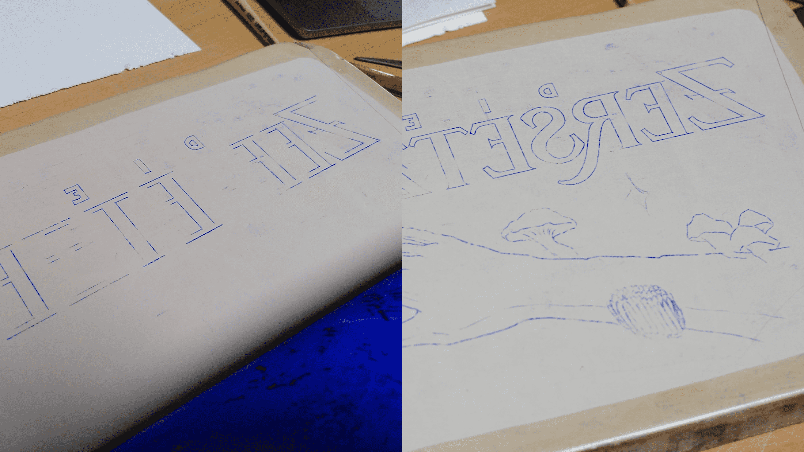
Transfer to stone in progress (left) to finished version (right)
Line by line gets transferred to the stone, until you have a finished blueprint in the end. Now, I paint the actual ink onto the stone. Now, nothing is allowed to go wrong, as errors can not easily be erased. In my series, I work with two different sorts of color: opaque ink and lithographic chalk. The ink will be pitch black, while the chalk allows for fine details and gradients.
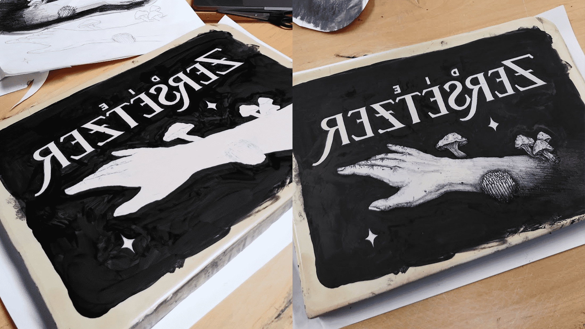
Painting the background pitch black with ink, while creating fine details in the hand with chalk
That’s it – the motif is completed on the stone. Painting the letters with a very fine brush was the most intense part. Now we can continue with the final step before printing.
Step 04 – Preparing the stone for printing
In order to reproduce the artwork, the stone now has to be prepared with several chemical powders and tinctures. Different lithographers have slightly varying approaches to this process, but they all serve the same purpose – making the stone open to take up the ink where it should be, and repel the ink where it should not. In the process, chemicals get applied in a specific order: colophony and tackum powder, acid, gum arabic, lamp oil, and more. The process will not be explained in detail here, it should just give an impression on how the stone is worked with.
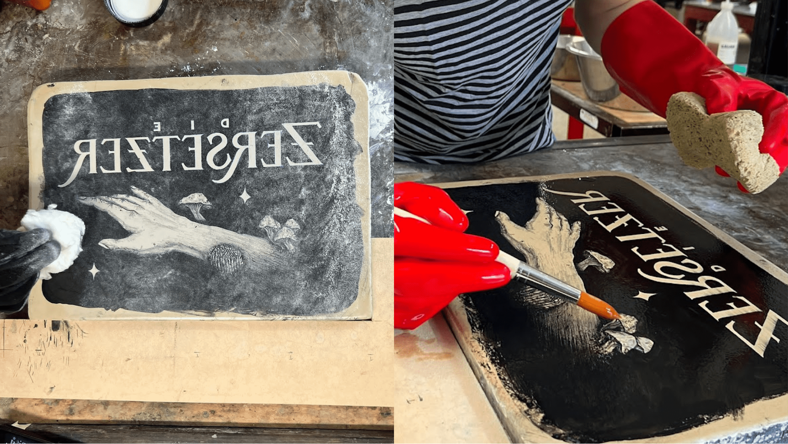
Applying colophonium powder (left) and etching the motif with acid (right)
All steps in the preparation process serve the purpose of giving the stone the ideal characteristics for printing.
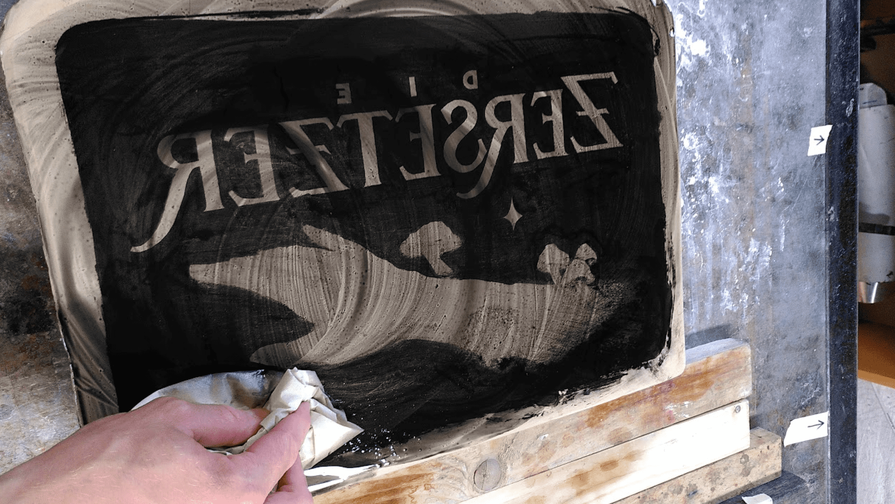
Rubbing out the ink with lamp oil at the end of the preparation process
At the end of the preparation process, the ink of the originally drawn motif on the stone gets „erased“ with lamp oil.
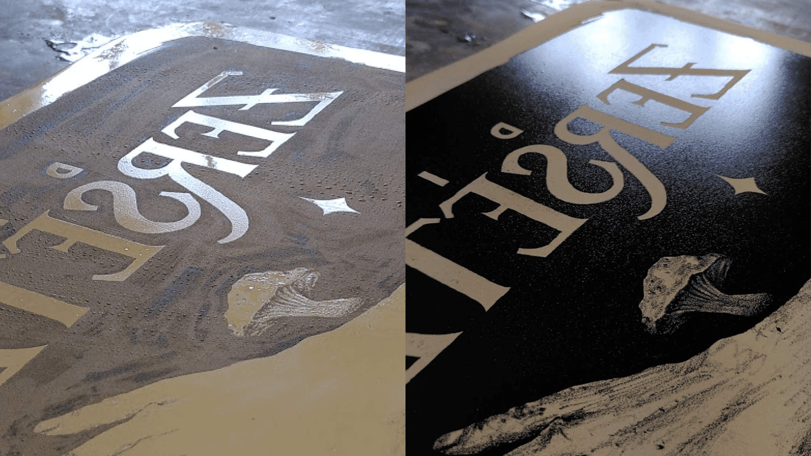
The stone before inking (left) and with ink applied (right)
Now, the stone is „empty“. The ink is washed out, but you can see a big difference in the areas of the stone. The parts that have not been drawn on before seem smooth and almost elevated. The areas that had ink on them seem to be muted (they don’t reflect the light) and have a texture instead. Now, the printing Ink can be applied with a roller. It is crucial to keep the stone wet in the whole printing process. If the stone gets dry and you ink it, you might ruin your motif.
Step 05 – Printing
We are ready to print! Now all our efforts pay off and become a printed lithography series. The first step in the process is to apply the printing ink onto the stone. This is done with an ink roller. Before applying, the stone is made wet with a sponge. Usually, you repeat this step until you have applied enough ink. As my motif should be pitch black and saturated, I rolled on ink about four times for each print.
Video: Inking the stone with an ink roller
After inking the stone, the paper is placed on it. This too must be done carefully, as the position can not be adjusted anymore when the paper has touched the ink. To position it evenly, a frame can come in handy.
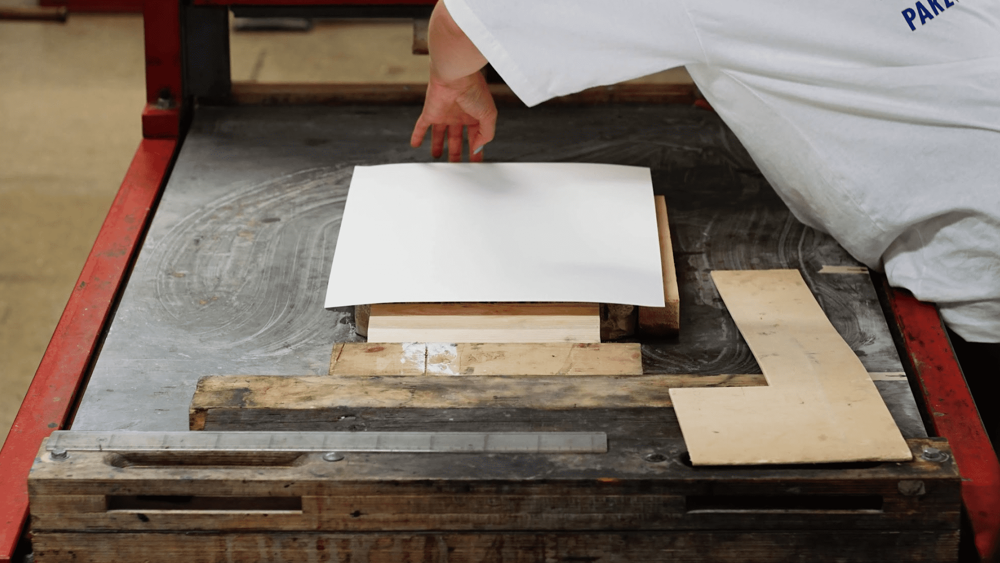
Positioning the paper on the stone. A frame (L shape on the right) can come in handy
Now, we need pressure to transfer the ink onto the paper. For that, we place a clean plexiglass pane on it. Then, the squeegee is positioned and pressure is applied with the lever. The gears get turned and move the tabletop through the press together with the paper. This evenly applies pressure to the whole paper.
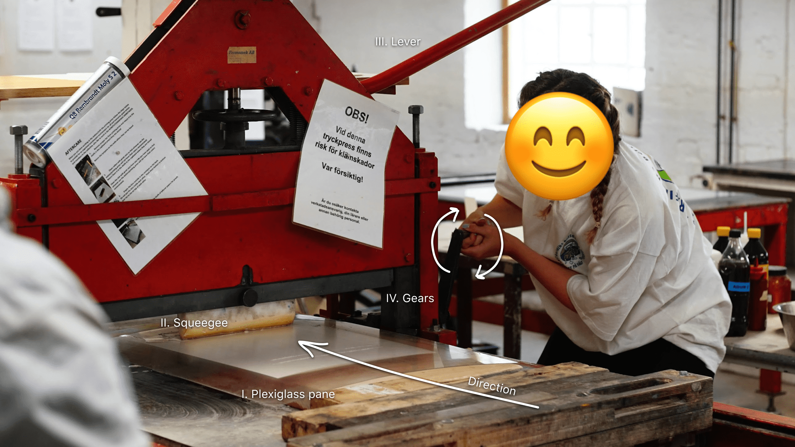
Clamping the paper and stone into the press and applying pressure
Now, we need pressure to transfer the ink onto the paper. For that, we place a clean plexiglass pane on it. Then, the squeegee is positioned and pressure is applied with the lever. The gears get turned and move the tabletop through the press together with the paper. This evenly applies pressure to the whole paper. The printing is done – now we only need to take the paper off the stone and dry them.
Video: Taking the print off the stone after the printing process
Usually, the prints will be air-dried for a few days. The oil-based ink takes longer to dry than regular, water-based inks.
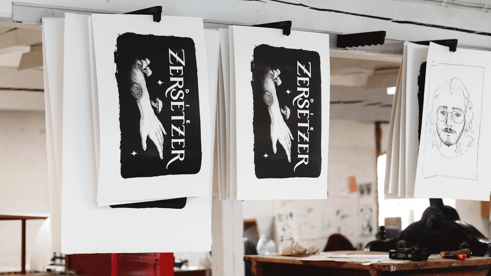
Finished prints drying in the workshop
After the printing sessions, the walls of the workshops are hanging full of prints. The smell of ink and machine grease fills the air. All in all, the workshops of Tidaholm are a very special surrounding to work in and feel like time travel back into the old days, where lithography was a printing standard.
Now, the only thing left is the finishing touch: numbering and signing the editions.
The final edition
While working in the Swedish workshops, I’ve printed a series of three motifs. The edition is limited to 15 prints each, every print numbered and signed.
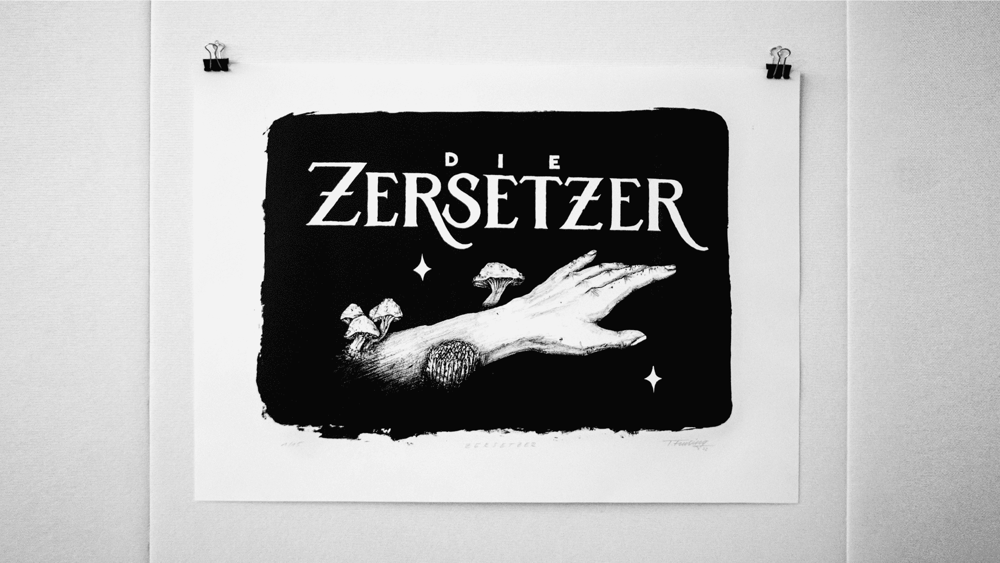
I. Die Zersetzer (engl. decomposers)
Fungi are the garbage disposal of nature, decomposing dead organisms and recycling organic matter into fertile soil. The first artwork showcases the important role of fungi in our ecosystem.
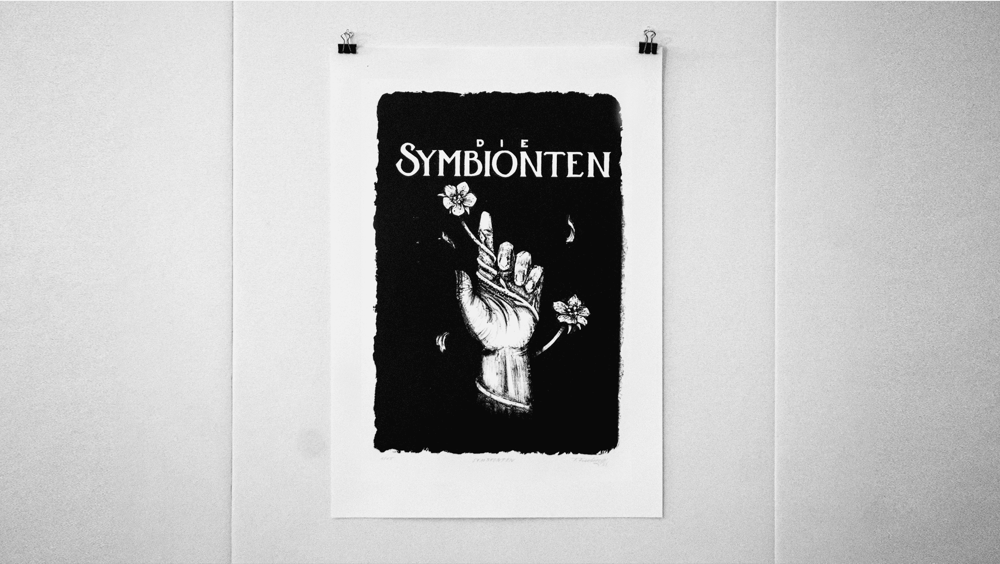
II. Die Symbionten (engl. symbionts)
Living together in harmony and benefitting from each other – that’s one of the more beautiful sides of nature. In my second artwork, I want to lay emphasis on this peaceful aspect by combining the rising human hand with uplifting flora.
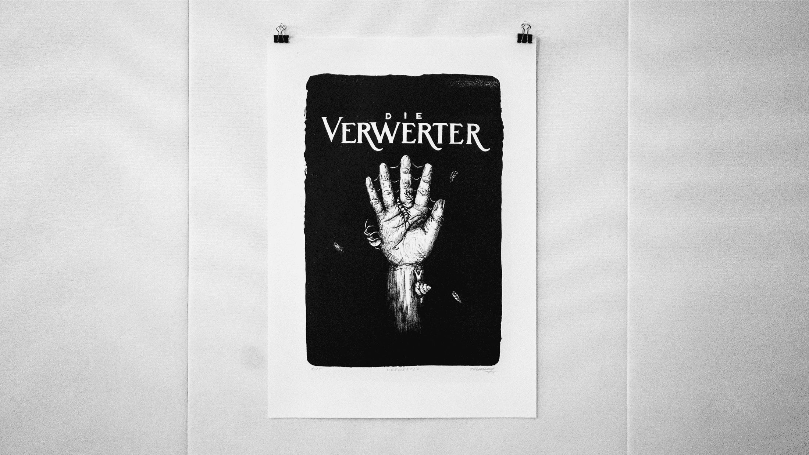
III. Die Verwerter (engl. utilizers)
Spiders, bugs, caterpillars, snails – often unfairly underestimated and overlooked because they look strange and disgust us. But they as well play a vital role for our lives – and be it by snatching mosquitos out of the air for us so we can enjoy our summer nights in peace.
In addition to the great workshops, I was lucky to get my series featured in a Swedish newspaper article together with some of my fellow students.
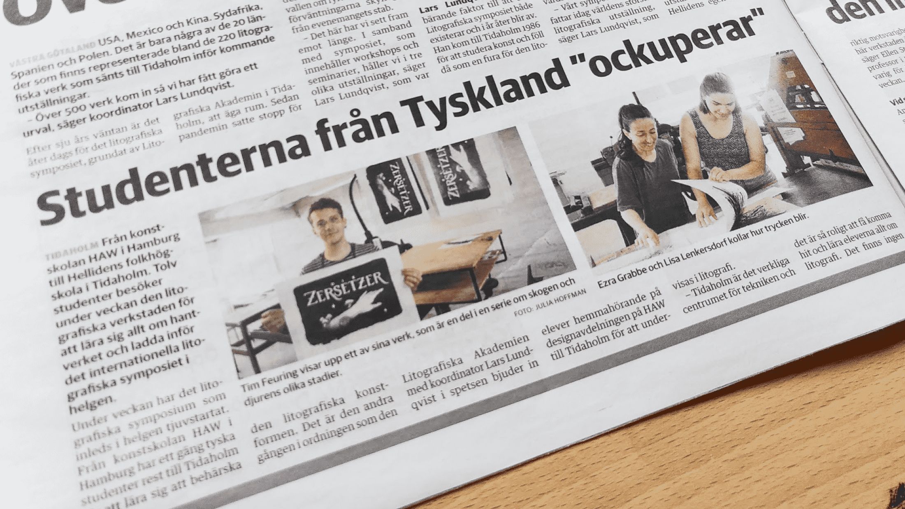
Swedish newspaper featuring the printing series
I hope you enjoyed this journey into the world of lithography and my printing series. I created this work as a part of the seminar "Der Rote Faden" under the guidance of Prof. Ellen Sturm in Tidaholm Sweden, summer 2022.
Thanks for reading! 😊